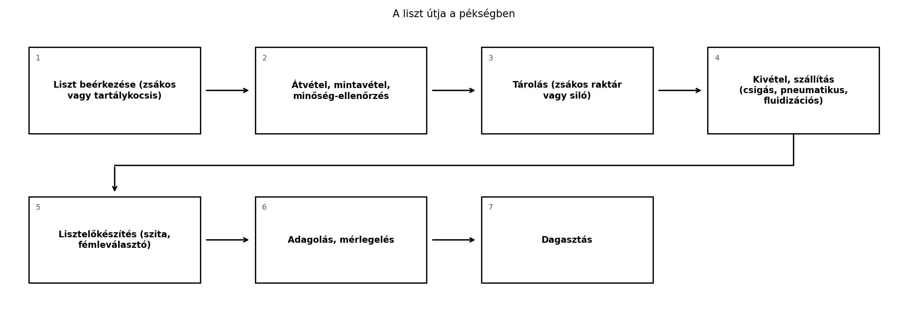

Hajnali kettő óra van. A pékségben az első dagasztás előtt állsz, és pontosan be kell mérned 120 kg BL 55 lisztet. Ha a lisztet zsákban tárolod, akkor felemeled, felvágod, szitálod. Ha silóból érkezik, akkor csak egy gombot nyomsz, és a liszt csövön át a mérlegre áramlik. Mindkét esetben tudnod kell, hogyan működik a berendezés, hol akadhat el, és miért tilos bármilyen beavatkozást végezni akkor, amikor a gép még forog. A liszttárolás és -szállítás a pékség „érrendszere”: ha itt nincs rend, akkor a legjobb receptből is rossz tészta lesz, vagy vegyszerszennyezés, rozsdás fémdarab kerül a termékbe.
Képzeld el a liszt útját a beérkezéstől a dagasztógépig. A liszt érkezhet 25 kg-os zsákokban, esetleg nagyméretű, 500–1000 kg-os big-bag zsákban, vagy élelmiszeripari tartálykocsival. A tartálykocsiból a lisztet kompresszorral vagy kisebb nyomással a külső silóba nyomják. Innen a liszt csigán vagy sűrített levegős (pneumatikus) csővezetéken megy a belső tárolóba, majd a napi tartályba, a mérlegre, a szitára, a fémleválasztóra és a dagasztógépbe. Minden állomáson két kérdést teszünk fel: „a liszt minősége változott-e?” és „embert, gépet veszélyeztet-e a por vagy a mozgó alkatrész?”.
Az ábra ezt a folyamatot mutatja.

A fenti folyamatban a szitálás és a mágneses fémleválasztó kettős védelmet ad: a szita eltávolítja a csomókat, szálakat és a beleragadt idegen testeket, a mágnes pedig a fémport és az apró fémdarabokat.
Definíció.
A zsákürítő (lisztfeladó) olyan berendezés, amely a
zsákos lisztet pormentesen, részben gépesítve juttatja a továbbító
rendszerbe. Rendszerint ráccsal, vágóeszközzel, bolygatócsigával és
elszívó csatlakozással készül.
Definíció.
A siló nagy befogadóképességű, általában hengeres,
kúpos aljú tartály, amely ömlesztett liszt tárolására szolgál. A liszt a
kúpos részre szerelt ürítőnyíláson, adagolócsigán vagy légpárnás ürítőn
távozik.
Definíció.
A pneumatikus lisztszállítás olyan szállítási mód,
amelynél a lisztet levegőáram vagy sűrített levegő viszi csővezetékben.
A fluidizációs szállítás pedig a siló vagy tartály
aljába bevezetett, finoman eloszló levegővel a lisztet „folyóssá” teszi,
így az a gravitáció vagy kis nyomáskülönbség hatására áramlik.
Definíció.
A centrifugális szita (forgódobos szita) a lisztet
forgó dobban, szitálással tisztítja meg a durva szennyeződéstől
(ellenőrizendő: gyártói leírás); a szita általában a
lisztet mechanikusan rostálja át. A mágneses
fémleválasztó állandó mágnessel vagy elektromágnessel fogja meg
a vas alapú fémrészeket.
Definíció.
A porrobbanás olyan gyors égés, amely akkor következik
be, ha éghető por (pl. lisztpor, cukorpor) a levegőben finoman eloszlik,
és gyújtóforrással érintkezik zárt vagy félig zárt térben. A robbanás öt
feltétele: éghető por; a levegőben eloszlatva (porfelhő), a robbanási
határok közötti koncentrációban; elegendő oxigén; elég energiájú
gyújtóforrás; zárt vagy félig zárt tér.
Higiénia.
A liszt tároló- és szállítóberendezéseit élelmiszer-minőségű,
korrózióálló anyagból (általában élelmiszeripari rozsdamentes acélból)
kell készíteni. A belső felületek legyenek simák, hézagmentesek és
könnyen tisztíthatók. Az élelmiszerrel érintkező felületek kialakítását
és anyagait az élelmiszerrel érintkező anyagokról szóló uniós rendelet
(1935/2004/EK) és a kapcsolódó szabványok szabályozzák (ellenőrizendő:
az aktuális szabványok és a berendezés megfelelőségi nyilatkozata).
Kis pékségben, ahol napi néhány száz kilogramm lisztet dolgoznak fel, a liszt általában 25 kg-os papír- vagy műanyag zsákban érkezik. A zsákok mozgatásához kézi emelőt, raklapkocsit vagy kisebb elektromos emelőt használnak. A zsákürítő lényege, hogy a dolgozó ne a poros térben vágja fel a zsákot, hanem a berendezés feletti rácson keresztül. A gép elszívja a felszálló port, kezeli a zsákot, és a lisztet továbbítja vagy egy tartályba, vagy közvetlenül a szitához.
Gyakorlat.
A zsákos liszt feladásának javasolt lépései kisüzemben:
Figyelem.
A zsákürítő vágókése, forgó rács vagy bolygatója súlyos ujjsérülést
okozhat. Gépbe nyúlni, a rácson ülve dolgozni, vagy az elszívást
kiiktatva lisztet önteni tilos.
Az ábra bal oldala a zsákürítő oldalmetszete: a rács fölött álló zsákvágó él és a rács alatt forgó bolygatócsiga (sraffozott veszélyzóna) jól mutatja, miért tilos a gépbe nyúlni; alul a pormentes ürítés négy lépése látható. A képkockák a fenti lépéssort követik: ráfektetés (3. lépés), felvágás magunktól elfelé (4. lépés), lassú ürítés bekapcsolt elszívással és az üres zsák összehajtása az elszívás alatt (5. lépés). A vészleállító (8) vészhelyzetben megállítja a bolygatót, de nem választja le a gépet: a rács megemelése, a csiga tisztítása előtt a főkapcsolót le kell kapcsolni és újraindítás ellen biztosítani. A HTML-változatban a lépések egyenként lejátszhatók, és az „elszívás kiiktatva” hibás állapot porfelhője is megjelenik.
Nagyobb üzemben a lisztet ömlesztve szállítják. A tartálykocsi töltőcsonkját a siló töltővezetékéhez csatlakoztatják, és a lisztet sűrített levegővel a silóba nyomják. A siló általában acélból készül, felső részén embernyílás, nyomáskiegyenlítő, szűrő és szintjelző található. A kúpos aljzatban ürítőnyílás van.
Szabály.
A siló ürítését mindig a berendezés kezelője végezze, és a silót ne
járassuk üresre, mert a csiga szárazon futhat, és a nyomólevegő a liszt
nélküli csőbe áramlik (ellenőrizendő: a gép kezelési útmutatója). A
silóból való levétel csigás vagy légpárnás ürítővel történhet.
Csigás szállítás esetén a siló aljához csatlakozó, csigából (spirálból) és csőből álló szerkezet továbbítja a lisztet. A csiga fordulatszáma szabályozza a szállított lisztmennyiséget. Ezt a módszert főleg kis távolságokra, függőleges vagy enyhén ferde emelésre használják.
Példa.
Ha egy csiga 1 perc alatt 6 fordulatot tesz, és egy fordulat 0,8 kg
lisztet szállít, akkor a percenként szállított tömeg:
Ez 10 perc alatt 48 kg lisztet továbbít, ami egy kisebb dagasztáshoz
elegendő. Ez a számítás tanulási példa, a valódi teljesítményt a
berendezés gépkönyve adja meg.
A pneumatikus lisztszállítás alapja az, hogy a levegő sebessége elegendő ahhoz, hogy a lisztet magával ragadja. A rendszerben ventilátor vagy kompresszor hozza létre a légáramot. A lisztet a szállítócsőbe adagolják, ahol a levegő felgyorsítja, majd a céltartálynál a lisztet ciklonnal, szövetszűrővel vagy zsákszűrővel leválasztják a levegőről.
Szabály.
A pneumatikus szállító akkor üzemeltethető biztonságosan, ha a
csővezeték fémből van, megfelelően földelt, a szűrőket rendszeresen
tisztítják, és a leválasztó ciklon vagy szűrő nem telítődik.
Működési elv.
Sűrített levegőt fújnak a siló alján lévő injektorba, ami a lisztet a
csőbe viszi. A levegő sebessége a csőben 15–25 m/s lehet (ellenőrizendő:
az adott rendszer tervezési paramétere). A leválasztóban a levegő tágul,
a liszt kihullik, a maradék port a szűrő fogja fel.
Higiénia.
A pneumatikus rendszer belső felületén lisztlerakódás, csomósodás
alakulhat ki. Ez rovarok, atkák és mikrobák melegágya lehet. A
csővezetéket, a szűrőházat és a ciklont tisztítási terv szerint kell
takarítani, megfelelő rovarirtó intézkedésekkel (ellenőrizendő: a pékség
GHP-terve és a tisztítási utasítás).
A fluidizáció azt jelenti, hogy a lisztbe alulról, finom pórusú levegőelosztó szöveten vagy porózus lemezen keresztül levegőt fújnak. A levegő a részecskék közé kerül, csökkenti a súrlódást, és a liszt úgy viselkedik, mint egy folyadék. Ezt az eljárást használják a siló alján a liszt „folyósítására”, majd a lisztet enyhe túlnyomással csőbe juttatják.
Példa.
Ha egy silókúp aljára szerelt fluidizáló párnán keresztül 2–4 kPa
nyomású levegőt vezetünk (ellenőrizendő: a gyártói adatlap), a liszt
gyorsan a kimenő csonkhoz áramlik. Ezután a pneumatikus rendszer
továbbítja a lisztet.
Figyelem.
A fluidizációs levegőnek száraznak kell lennie. Nedves levegő esetén a
liszt megcsomósodik, és a berendezés eltömődik. A levegő előkészítésének
(szűrés, szárítás) üzem közbeni ellenőrzése a kezelő feladata.
A silós rendszer elemeit és a liszt, illetve a levegő útját a következő vázlat foglalja össze: a liszt útja vastag folytonos, a levegőé szaggatott vonal; a háromszögjel a zárt teret és a porrobbanás szempontjából veszélyes pontokat jelöli. A HTML-változatban a hat lépés (betárolás, fluidizálás, szállítás, leválasztás, tisztítás, mérés) egyenként lejátszható, a hozzá tartozó ellenőrzési ponttal.
A pneumatikus rendszerben a szűrők feladata a liszt és a levegő szétválasztása, valamint a porszennyezés megakadályozása. A leggyakoribb a zsákos szűrő: a levegő átszűri a szövetet, a liszt a zsák külső felületére tapad, majd rázatással vagy visszaáramoltatással a gyűjtőbe hullik. A szűrő akkor jó, ha a kilépő levegő nem poros, és a nyomáskülönbség a gyártó által megadott tartományban van (ellenőrizendő: gyártói adatlap).
A szita a liszt mechanikai tisztításának alapgépe. A liszt átmegy egy rezgő vagy forgó szitafelületen. A szita szemnagyságát a liszt finomságához igazítják. A szita lyukbősége a lisztnél jellemzően 0,8–1,2 mm (ellenőrizendő: gyártói adatlap, üzemi technológiai lap), így a csomók, papírdarabkák, cérnaszálak fennakadnak, míg a liszt áthullik.
Definíció.
A mágneses fémleválasztó a lisztáramba helyezett erős
mágnes. A vas alapú fémdarabok ráragadnak. A nem mágneses fémek
(alumínium, réz, az ausztenites rozsdamentes acél is) ellen fémdetektort
alkalmaznak, általában a késztermék csomagolása előtt (ellenőrizendő:
üzemi HACCP-terv). A sütőiparban a lisztnél a vas és acél szemcsék a
leggyakoribb fémidegen anyagok.
Higiénia.
A szitát és a mágneseket rendszeresen – általában naponta vagy
műszakonként – ellenőrizni és tisztítani kell. A mágnesen megakadt
fémszemcséket fel kell jegyezni, mert azok jelezhetik a berendezés
kopását vagy a nyersanyag szennyezettségét.
A liszt finom pora éghető. Ha a levegőben a koncentrációja elér egy bizonyos értéket, és gyújtóforrás (szikra, meleg felület, sztatikus feltöltődés) van jelen, a porkeverék berobbanhat. Ez a veszély különösen a silókban, a szűrőházakban, a ciklonokban és a csővezetékekben áll fenn.
Szabály.
A liszttároló és -szállító berendezéseket földelni kell, hogy a
sztatikus elektromosság ne tudjon szikrát gerjeszteni. A szűrőket,
silókat és vezetékeket rendszeresen takarítani kell, és tilos olyan
gyújtóforrást használni, mint a nyílt láng, vagy olyan szerszámot, amely
ütésre szikrát ad. A villamos berendezések a porrobbanási zónának
megfelelő kivitelűek legyenek.
Gépbiztonság.
A siló zárt tér: belsejébe csak írásos munkaengedéllyel, leállított,
leválasztott (főkapcsoló lekapcsolva, lakattal és címkével újraindítás
ellen biztosított – a vészleállító megnyomása ehhez nem elég), a
betárolás ellen lezárt, kiszellőztetett és oxigénszintre ellenőrzött
silóba, a kívül álló, mentésre felkészült figyelő jelenlétében szabad
belépni (ellenőrizendő: üzemi zárttéri munkautasítás, munkavédelmi
előírások). A silóban ugyanis a lisztpor, a beomló lisztréteg
(elsüllyedés, betemetés) és az oxigénhiány egyaránt veszélyes. Az emberi
belépést a siló tetején lévő nyíláson, biztosítóhevederrel és
mentőkötéllel kell végezni. Ezt a munkát pék tanuló nem végezheti; a
silóba belépést kizárólag erre kiképzett szakember végzi.
Tilos.
Tilos a pneumatikus rendszerben, a szűrőházban vagy a silóban nyílt
lánggal, hegesztő- vagy vágólánggal munkát végezni addig, amíg a
pormentesítés és a gázkoncentráció ellenőrzése meg nem történt. Tilos
továbbá a szellőzőnyílásokat lezárni vagy a szűrőzsákokat kiiktatni,
mert ezzel a porrobbanás és a túlnyomás veszélye nő.
Higiénia.
A porrobbanás-védelem és a higiénia összekapcsolódik: a felhalmozódott
lisztpor nemcsak robbanásveszélyes, hanem táptalajt ad a
mikroorganizmusoknak és a kártevőknek. A takarítást porfelverés nélkül,
lehetőleg központi porszívóval vagy nedves módszerrel végezzük; sűrített
levegős lefúvatás tilos, mert robbanóképes porfelhőt hoz létre.
Figyelem.
A lisztpor belélegezve allergiát (nátha, kötőhártya-gyulladás,
pékasztma) okozhat. A zsák felvágását, ürítését és a szita tisztítását
elszívás mellett végezd, a port ne fújd és ne söpörd fel; poros munkánál
viselj legalább FFP2 szűrőfélálarcot. A tartós köhögést, orrfolyást
jelezd a foglalkozás-egészségügyi orvosnak (ellenőrizendő: lisztporra
vonatkozó munkahelyi expozíciós határérték, üzemi
kockázatértékelés).
Az alábbi ellenőrzőlista a silóból való lisztlevételre és a pneumatikus rendszer elindítására vonatkozik. Ez a művelet nem „recept”, de a lépések betartása megelőzi a balesetet és a termékhibát. A berendezés kezelése csak betanítás után, felügyelettel végezhető.
Cél: a liszt pormentes, szennyeződésmentes továbbítása a silóból a napi tartályba vagy a mérlegre.
Előkészítés:
Indítás:
Befejezés:
Gépbiztonság.
A silóürítő csiga, a pneumatikus rendszer és a szűrő leállítása előtt
semmilyen tisztítást vagy javítást nem szabad végezni. A gépet
áramtalanítani kell, és meg kell várni, hogy a forgó részek teljesen
leálljanak. A védőburkolat nélküli ékszíj vagy csiga közelében dolgozni
tilos.
Egy közepes pékségben a reggeli műszak elején a pék azt tapasztalja, hogy a silóból érkező liszt szaga enyhén dohos, és a szita felett apró csomók maradnak. A pék nem kezdi el a dagasztást, hanem szól a műszakvezetőnek. Kiderül, hogy a siló alsó zónájában a fluidizáló levegő nedvessége miatt liszt tapadt meg, és ott penészedés indult. A siló ürítője ezt a réteget csak részben hozta fel. A hibát a levegőszárító berendezés karbantartásának elmaradása okozta. A tanulság: a pneumatikus és fluidizációs berendezésnél a levegő előkészítése ugyanolyan fontos, mint a lisztszállító cső tisztasága. A tételt félretették, a silót kiürítették, tisztították, és a levegőszárítót javították. (Az eset tanulási példa, nem konkrét üzemi jegyzőkönyv.)
A liszttárolás és -szállítás során az alábbi minőségi jellemzőket ellenőrizhetjük:
HACCP.
A liszttárolásnál és -szállításnál a HACCP-veszélyek elsősorban
fizikaiak (fém, fa, papír, kő), nedvesség esetén pedig a penész és a
mikotoxin. A csomósodás minőségi hiba, nem élelmiszer-biztonsági
veszély. A porrobbanás munka- és tűzvédelmi kockázat, amelyet a
kockázatértékelés és a robbanásvédelmi dokumentum kezel (ellenőrizendő:
Mvt., OTSZ, üzemi dokumentáció), nem HACCP-kritikus pont. A liszt
mikrobiológiai veszélye alacsony, mert a sütés elpusztítja a legtöbb
kórokozót, de a penészgombák toxinjai súlyos élelmiszer-biztonsági
problémát jelentenek. Ezért a siló és a szállítórendszer nedvességtől
való védelme, a takarítás és a nedves liszt elkülönítése a HACCP-terv
része (ellenőrizendő: az üzem HACCP-terve).
Hiba: A pék a szűrőzsákokat nem tisztítja, és a
nyomásmérő értéke egyre magasabb.
Ok: A zsákok eltömődtek, a rendszer ellennyomása
nő.
Következmény: csökkent szállítási teljesítmény,
túlmelegedés, porrobbanás-kockázat.
Megoldás: a szűrőzsákokat a gyártói utasítás szerint
cserélni vagy tisztítani, a nyomásértéket dokumentálni.
Hiba: A mágneses fémleválasztót hetekig nem
ellenőrzik.
Ok: Karbantartás elmaradt.
Következmény: a mágnes telítődik, és a fémdarabok a
tésztába kerülnek, ami sérülést, reklamációt okoz.
Megoldás: minden műszak elején tisztítani, a talált
fémdarabokat feljegyezni.
Hiba: A dolgozó a pneumatikus rendszer csövét
kalapáccsal ütögeti, hogy a beszorult lisztet elmozdítsa.
Ok: Türelmetlenség, a biztonsági szabályok figyelmen
kívül hagyása.
Következmény: szikra keletkezik, ami a porfelhőt
berobbantja; a cső megrongálódik.
Megoldás: az elakadást a rendszer leállítása után, a
gyártó által megadott módon (pl. levegővel átfúvatva, a biztonsági
utasítás szerint) kell megszüntetni.
1. feladat (A)
Sorold fel a liszttárolás kisüzemi eszközeit, és röviden írd le egyikük
működését.
2. feladat (A)
Mi a különbség a pneumatikus lisztszállítás és a fluidizációs szállítás
között?
3. feladat (B)
Egy csiga 4 fordulatot tesz percenként, fordulatonként 0,5 kg lisztet
szállít. Mennyi lisztet továbbít 15 perc alatt? Mennyi idő alatt szállít
el 30 kg-ot?
4. feladat (B)
Tervezd meg az ellenőrzési pontokat egy silós lisztellátó rendszer napi
indításához. Milyen veszélyeket keresel, és milyen intézkedést
teszel?
5. feladat (C)
A pneumatikus rendszer szűrőjének nyomásmérője a normál értékhez képest
jelentősen megemelkedik. Mi lehet az ok? Milyen hibákat ne kövess el a
javítás során, és miért?
6. feladat (D)
A pékségben a liszt szitáján apró papírdarabok és egy 2 mm-es acél darab
akad fenn. Jól működött-e a rendszer? Honnan származhat az acéldarab, mi
a teendő a tétellel, és melyik berendezés fogta volna meg, ha átjut a
szitán? Hogyan előzhető meg a hasonló szennyezés?
1. feladat (A)
Kisüzemi eszközök: zsákürítő, lisztkocsi, emelő (vagy raklapkocsi),
esetleg kis teljesítményű szállítócsiga. A zsákürítő ráccsal és
elszívással lehetővé teszi a liszt pormentes feladását, a lisztkocsi
pedig a liszt mozgatását és a dagasztógéphez való szállítását
segíti.
2. feladat (A)
A pneumatikus szállításnál a lisztet levegőáram viszi csővezetékben, a
fluidizációs szállításnál a siló alján bevezetett levegő elsősorban a
lisztet „folyóssá” teszi, így az gravitációval vagy kis nyomással
áramlik. A fluidizáció gyakran a pneumatikus szállítás előkészítő
lépése.
3. feladat (B)
Percenkénti szállítás:
.
15 perc alatt:
.
30 kg szállításához:
.
Ellenőrzés: a szállított mennyiség a csiga fordulatszámával arányos.
4. feladat (B)
Indítási ellenőrzőlista:
- Ellenőrizd a siló szintjét, a csővezetékeket, a szűrő nyomását.
- Győződj meg a mágnes és a szita tisztaságáról.
- Viselj porálarcot, beszélj a munkatárssal.
- Indítás után figyeld a nyomást, a szállítási sebességet.
- Leállítás után dokumentáld a mennyiséget és a talált
szennyezést.
Veszélyek: porrobbanás, eltömődés, szennyezés, gépészeti hiba.
5. feladat (C)
A megnövekedett nyomás oka lehet a szűrőzsák eltömődése, csőszűkület,
túl sok liszt adagolása, vagy a leválasztó ciklon hibája. Tilos a gép
futása közben a szűrőt tisztítani, a zsákokat kinyitni, vagy a csövet
megütni. Ezek porrobbanást és sérülést okozhatnak. A javításhoz a
rendszert le kell állítani, áramtalanítani, és csak ezután lehet a
gyártói utasítás szerint eljárni.
6. feladat (D)
A szita jól működött: feladata éppen a papír és a durva idegen anyag
visszatartása. Ha az acéldarab (vas vagy mágneses acél) átjutott volna a
szitán, a mágneses fémleválasztó, mint második védvonal fogta volna meg;
a nem mágneses (pl. ausztenites rozsdamentes) darabot csak fémdetektor
jelezné. Az acéldarab a szállítórendszer kopására vagy a beszállított
liszt szennyezettségére utal: a mágnest és a szitát ellenőrizni, a
darabot megőrizni és dokumentálni, a tételt zárolni, a forrást (csiga,
rács, zsákvágó kés, beszállító) felderíteni. Megelőzés: zsákvágás a rács
felett, szitaszövet és mágnes napi ellenőrzése, a mágnes közvetlenül a
dagasztó előtt, végtermékfém-detektor.
A pékségben a lisztet zsákosan vagy silóban tárolják. Kisüzemben zsákürítőt, lisztkocsit és emelőt használunk; a zsákürítés pormentesen, rács felett, elszívással történik. Nagyüzemben a liszt tartálykocsiból a silóba kerül, onnan csigás vagy pneumatikus szállítással továbbítják. A pneumatikus rendszer sűrített levegővel viszi a lisztet csőben, a fluidizációs szállítás a siló alján levegőt fúj a lisztbe, hogy az folyóssá váljon. A rendszerhez szűrők tartoznak, amelyek a lisztet leválasztják a levegőről. A lisztet mindig szitáljuk és mágneses fémleválasztón átvezetjük, hogy a fizikai szennyeződéseket eltávolítsuk. A porrobbanás veszélyes jelenség, amelyhez öt feltétel együtt kell: éghető por, porfelhő formájában a robbanási határok közötti koncentrációban, elegendő oxigén, elég energiájú gyújtóforrás és zárt vagy félig zárt tér. A silókat és csővezetékeket földelni kell, a szűrőket tisztán tartani, és tilos nyílt láng, szikrázó szerszám vagy porfelverő takarítás. Továbbvitt eredmény: a leírt tárolási és szállítási ismeretek nélkülözhetetlenek a későbbi alfejezetben tárgyalt mérlegek, adagolók és a víz-, só- és élesztő-előkészítő berendezések megértéséhez, mert a lisztet csak akkor tudjuk pontosan mérlegelni és adagolni, ha a szállítórendszer tiszta, ütemezett és biztonságos.
A fejezet a liszttárolás és szállítás általános sütőipari gyakorlatát írja le. Az élelmiszer-biztonsági követelményekre az élelmiszerjog általános elvei (178/2002/EK), az élelmiszer-higiéniai rendelet (852/2004/EK) és az élelmiszerrel érintkező anyagokról szóló rendelet (1935/2004/EK) vonatkoznak; a pontos előírásszámok és hatályos változatok ellenőrizendők. A porrobbanás-védelmi zónabesorolás, a silók és pneumatikus rendszerek biztonsági követelményei a robbanásvédelmi szabványokban (MSZ EN sorozat) találhatók; a konkrét szabvány számát és a zónabesorolás határait kiadás előtt ellenőrizni kell. A levegősebességre, nyomásértékekre, szállítási teljesítményre megadott számok tanulási példák, nem mért vagy gyártói értékek; ezeket az üzemi technológiai lap és a gépkönyv alapján kell pontosítani.